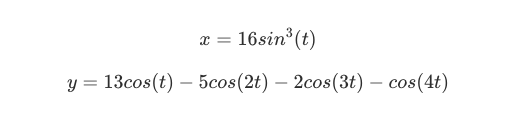
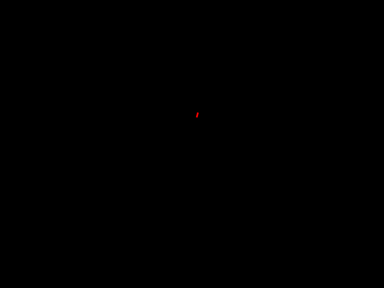

前言
过几天就是情人节了，刚好最近在研究 MoviePy ，所以今天就来使用 MoviePy 画一个爱心，会动的。
废话不多说，直接看效果
画爱心
先来看下如何画出一个爱心
画爱心有好几种方程，使用搜索引擎一下就能搜出来，试了几种找到下面这种效果比较满意

这个方程可以根据 t 算出对应的坐标, t 的取值范围是 0-2π ，算出了坐标把这些点绘制出来，得到的就是一个爱心的形状。
MoviePy 提供了一个可以让我们自己创建视频数据方法，只需要给 VideoClip 设置 make_frame 方法，在里面把每一帧的图像绘制出来就行了。
在 Python 里绘图有许多第三方库，我这里使用 matplotlib 。
由于我们是使用 matplotlib 来绘制的， MoviePy 不能直接使用，所以绘制好之后要把图像转成 MoviePy 可以使用的方式。
MoviePy 也考虑到这点了，提供了 mplfig_to_npimage 函数，从名字就可以看出是把 matplotlib 的图像转成 numpy 数组，转换后就能直接使用了。
代码如下:
1
2
3
4
5
6
7
8
9
10
11
12
13
14
15
16
17
18
19
20
21
|
t = np.linspace(0, 2 * np.pi, 1024) # 0-2π生成1024个数
# 下面的都是一些图形的配置
fig, ax = plt.subplots()
fig.set_facecolor('black') # 设置背景为黑色
ax.set_xlim(-20, 20) # 设置x轴显示的范围
ax.set_ylim(-20, 20) # 设置y轴显示的范围
ax.axis('off') # 不显示坐标轴
line, = ax.plot([], [], color='red', lw=2)
def make_frame(frame):
x = 16 * np.sin(t)**3
y = (13 * np.cos(t) - 5 * np.cos(2 * t) - 2 * np.cos(3 * t) -
np.cos(4 * t))
line.set_data(x, y)
return mplfig_to_npimage(fig=fig) # 转成numpy数组
video = VideoClip(make_frame=make_frame, duration=3)
video.write_gif("draw_heart.gif", fps=20)
|
执行之后效果如下，看起来还不错
慢慢画出爱心
在上一小节讲了如何画出爱心，可惜却是静态的，想要让爱心随着笔画一点点画出来，要怎么做呢？
从上面的分析我们知道，爱心其实就是一系列的点绘制在图像上，这些点的形状一起构成了爱心，所以我们想要慢慢的画出爱心，只需要把这些点一个一个的绘制出来就好了。
我们假设时长为 3s，每秒画 20 个点， t 的范围是 0-2π
推算出 t△ = 2π / 3 / 20 ≈ 0.1 ，也就是每次 t 都要增加大约 0.1
代码如下:
1
2
3
4
5
6
7
8
9
10
11
12
13
14
15
16
17
18
19
20
21
22
23
24
|
fig, ax = plt.subplots()
fig.set_facecolor('black')
ax.set_xlim(-20, 20)
ax.set_ylim(-20, 20)
ax.axis('off')
line, = ax.plot([], [], color='red', lw=2)
xdata, ydata = [], [] # 创建两个列表，用来存放坐标
point_count = 0
def make_frame(frame):
global point_count
point_count += 0.1
x = 16 * np.sin(point_count)**3
y = (13 * np.cos(point_count) - 5 * np.cos(2 * point_count) -
2 * np.cos(3 * point_count) - np.cos(4 * point_count))
xdata.append(x) # 把新的点加入列表中参与绘制
ydata.append(y) # 把新的点加入列表中参与绘制
line.set_data(xdata, ydata)
return mplfig_to_npimage(fig=fig)
video = VideoClip(make_frame=make_frame, duration=3)
video.write_gif("heart_anim.gif", fps=20)
|
效果如下，有点意思了

跳动的爱心
爱心画出来了，但是却没有心动的感觉，那么要如何实现？
仔细观察爱心的跳动其实就爱心变大然后变回和原来一样大，接着变小然后又变回和原来一样的一个过程，所以要做出这个效果，我们就需要一步步画出不同大小的爱心就可以了。
想要让爱心变大就需要同时把所有的坐标同时变大，所以只要乘以一个大于 1 的系数就可以了。
同理想要让爱心变小，让所有坐标同时乘以一个小于 1 的系数就行。
所以跳动的爱心就转化成了一个系数随着时间先变大然后恢复原来大小，接着变小后又恢复原来大小的过程，呈现出一个周期性规律。
经过这么一想就知道了，我们常见的三角函数不就是有这么一个周期性规律吗。
由于正弦函数的取值范围为[-1, 1]，然后在这上边乘上 0.1 就能使其在 10%范围放大和缩小。加上原来的大小，就得到了我们要计算的缩放系数了。
代码如下:
1
2
3
4
5
6
7
8
9
10
11
12
13
14
15
16
17
18
19
20
21
22
23
24
25
26
|
t = np.linspace(0, 2 * np.pi, 1024)
fig, ax = plt.subplots()
fig.set_facecolor('black')
ax.set_xlim(-20, 20)
ax.set_ylim(-20, 20)
ax.axis('off')
line, = ax.plot([], [], color='red', lw=2)
frame_count = 0
def make_frame(frame):
global frame_count
frame_count += 0.5 # 0.5 用来控制心脏跳动的速度，数值大跳的越快
scale = 1 + 0.1 * np.sin(frame_count) # 计算缩放系数
x = scale * 16 * np.sin(t)**3
y = scale * (13 * np.cos(t) - 5 * np.cos(2 * t) - 2 * np.cos(3 * t) -
np.cos(4 * t))
line.set_data(x, y)
return mplfig_to_npimage(fig=fig)
video = VideoClip(make_frame=make_frame, duration=5)
video.write_gif("beat_heart.gif", fps=20)
|
效果如下，确认过是心动的感觉
组合两种效果
要把两种效果组合起来，其实很简单，只需要先把爱心慢慢画出来，画好之后，然后再画爱心的跳动就好了。
1
2
3
4
5
6
7
8
9
10
11
12
13
14
15
16
17
18
19
20
21
22
23
24
25
26
27
28
29
30
31
32
33
34
35
36
37
38
39
40
41
42
43
44
45
46
47
48
49
50
|
t = np.linspace(0, 2 * np.pi, 300)
fig, ax = plt.subplots()
fig.set_facecolor('black')
ax.set_xlim(-20, 20)
ax.set_ylim(-20, 20)
ax.axis('off')
line, = ax.plot([], [], color='red', lw=2)
point_count = 0
def beat_frame(frame):
global point_count
point_count += 0.5
scale = 1 + 0.1 * np.sin(point_count)
x = scale * 16 * np.sin(t)**3
y = scale * (13 * np.cos(t) - 5 * np.cos(2 * t) - 2 * np.cos(3 * t) -
np.cos(4 * t))
line.set_data(x, y)
return mplfig_to_npimage(fig=fig)
xdata, ydata = [], []
frame_count = 0
def draw_frame(frame):
global frame_count
frame_count += 0.1
x = 16 * np.sin(frame_count)**3
y = (13 * np.cos(frame_count) - 5 * np.cos(2 * frame_count) -
2 * np.cos(3 * frame_count) - np.cos(4 * frame_count))
xdata.append(x)
ydata.append(y)
line.set_data(xdata, ydata)
return mplfig_to_npimage(fig=fig)
draw_video = VideoClip(make_frame=draw_frame, duration=3)
draw_video.set_start(0)
draw_video.set_fps(60)
beat_video = VideoClip(make_frame=beat_frame, duration=5)
beat_video.set_fps(20)
beat_video.set_start(4)
final_clip = concatenate_videoclips([draw_video, beat_video])
final_clip.write_gif("final.gif", fps=20)
|
最后执行的效果就和开头一样了。
总结
有了这个心动的效果，再结合之前讲的，可以在上面加一些文字，这样效果就更好了。
参考

关注公众号[devbins]，回复[心动]获取源码